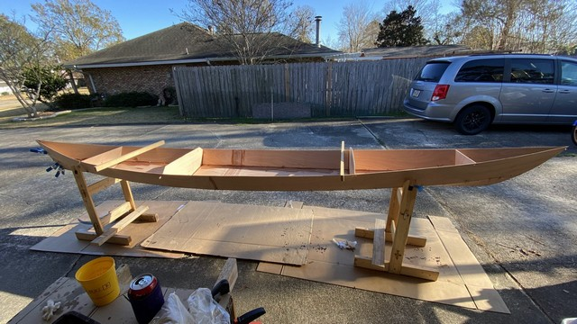

9. Chill Out!
Winter has arrived in south Louisiana as evidenced by this icicle dangling from a hose bib. The cool weather halts epoxy work as it won’t cure.
Some years we Gulf coast residents escape winter with only a light frost or two and don’t get a chance to build a fire in the fireplace. This year we’re getting several hard freezes which has given me reason to burn up my stash of old dozy firewood. This build diary entry summarizes our progress over several weekends as January 2022 comes to an end.
Kayak 3 of 3 Takes Shape
I wanted to keep the progress of all three kayaks on pace with each other, so I stitched together the hull of kayak #3 of 3. The following weekend I continued with loosely stitching the deck panels on a chilly Saturday, and then had the opportunity on Sunday to tack weld the hull together as we enjoyed warmer temperatures which allowed the epoxy to cure. On the other two boats I removed all wire stitches except those joining deck to hull. I used a blowtorch to heat the copper wires and then pulled them through the cured epoxy, often snipping them in half on the inside of the first. Some builders leave the wires in and sand them flush. I want them out.

Technique Exploration
During intervening weekdays the cold temperatures or rain prevent progress with epoxy so I turned to reading ahead in the builder’s guide and various instructional videos and online discussion forums. I was seeking to make progress without requiring epoxy work. Several carpentry tasks I knocked out included cutting out cockpit hip braces, making toggles to hold down the hatch covers, and the cockpit seat backs. I discussed the seat backs in the previous blog post. So far this plywood bending attempt isn’t going very well so I’m going to have to steam the plywood.
I also began listing requirements and seeking sources for marine hardware, and I’m trying to decide whether to go with 316 stainless steel or silicon bronze. I’m looking at Fairwind Fasteners for the bronze but if I decide to go cheaper(?) with stainless I may shift to a different supplier such as Jamestown Distributors. The builder’s manual seems to suggest simply using wood screws to install the hatch toggles (also called “turn dogs”) but I feel this would be problematic in the long term. Instead, I’m planning to do the “drill/fill/redrill” technique by drilling enlarged holes for each, fill with epoxy, and then after curing drill small holes in the epoxy to accept bolts. This results in waterproof holes and fully sealed wood. A pair of nuts on the inside will be tightened against each other. This positively secures the bolt in place at the desired tension.
I’ve read other builders have had an issue with friction from the toggles rubbing the varnish off the hatch and deck where they rotate. I plan to insert a thin nylon washer between the deck and the toggle. Knowing that worn varnish leads to ruined epoxy due to UV exposure, I may instead, if I can find appropriate material, glue a thin nylon or HDPE plastic sheet fully across the bottom of all toggles. This would greatly reduce excessive friction which is harmful to the finish. I will need to experiment to ensure they stay closed. I am not anticipating paddling my kayaks in rough surf where a wave could conceivably blow open a hatch, so I think this solution is preferable to damaged varnish on the deck.
Flush Hatches?
I’ve also been considering several mechanisms for holding hatches shut - flush hatches - including the following designs:
- Laszlo’s design with internal bungees
- Orca Boats has a YouTube video on flush hatches
- here is a solution using magnets
- the Mobi system uses wooden latches on the underside of the hatch lid
- this discussion on WestCoastPaddler.com shows another view
- some use a single screw clamp through the centroid of the hatch cover (YouTube)
I fear the internal bungees would get in the way of storage capacity (I plan to go kayak camping) and the center screw clamp solution secures the hatch down at only two sides, not four. Critiques suggest the two unclamped sides might allow water intrusion, but even if it stays dry it does obstruct interior storage space. Magnets just seem too complex for my first build. All of these are heavier than CLC’s standard wooden hatch toggles. For these reasons, I’ve decided to stick with the wooden hatch toggles described in the plans, four per cover, with the hardware modifications described above. Both of the aforementioned solutions seem to add unnecessary weight to the boat. CLC offers Delrin plastic toggle hardware. They seem a bit expensive for my project as I’d need 24 of them (over $120 worth) for my family’s three boats. Delrin would solve the weight and friction problem though…
Paddle Designs
Provided in the gallery of images below are pictures of two sketches from a book entitled Canoe Paddles by Warren Graham (2001) found at my local library. The paddle shape sketches are generalized by the author and attributed to various native American tribes. I liked the shape of the paddles used by southern coastal tribes including Caddo, Calusa and Timcua. I’ve been considering building at least one kayak paddle in my shop so I was researching shape and technique. I’m not doing the laminated hardwood strip technique which is documented in the book because I don’t have a woodshop and fear the result would be heavy. My thought is to use a few sizable scraps of okoume encased in fiberglass for the blades and purchase a 7’ long 1.25" diameter carbon fiber tube. So far, my research of the price of the carbon tube makes the project cost prohibitive. I can buy a commercially made paddle for equal or only slightly more money. Still, I ended up visiting my local Bass Pro store and traced the outline of one of the performance paddles onto a large sheet of paper. I might ditch the carbon tube idea and try to make a paddle shaft out of wood.
Gallery of Images


Goodbye January
The month left south Louisiana with truly fine weather and you can see in several of the above photos that I’m now cramming all three kayaks into my storage room to keep them safe from harm during coming days of rain and cold. Considering the blizzards of the northeast and the “iguana dropping” cold permeating south Florida, I feel grateful for the past two days of clear skies and warmish temperatures which allowed continued progress.